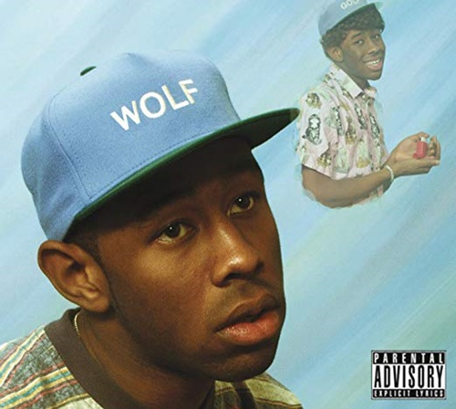
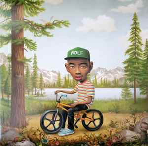

inicio
Lançado em abril de 2013, Wolf marca uma mudança significativa na carreira de Tyler, The Creator. Enquanto os projetos anteriores eram focados no "horrorcore", Wolf introduz uma sonoridade mais rica, com influências claras de jazz, neo-soul e piano. O álbum continua a narrativa dos alter-egos de Tyler, mas agora focado no cenário do fictício Camp Flog Gnaw.
O disco foi aclamado por sua produção musical, quase inteiramente feita por Tyler. A narrativa é mais cinematográfica, contando a história do triângulo amoroso entre os personagens Wolf, Sam e Salem. É um projeto que equilibra a agressividade característica do início da carreira com momentos de vulnerabilidade e introspecção sobre a fama e a família.
Abaixo, alguns pontos fundamentais sobre a obra:
Wolf é frequentemente citado pelos fãs como um dos álbuns favoritos devido à sua atmosfera única e coesa. Ele serve como a "ponte" perfeita entre o Tyler rebelde do Odd Future e o artista vencedor do Grammy que ele viria a se tornar nos anos seguintes, provando sua versatilidade artística e visão criativa única.
Primeira capa (A clássica azul):

Segunda capa (Capa Deluxe):

A Capa Principal: Criada pelo artista pop surrealista Mark Ryden, apresenta Wolf Haley com um fundo azul céu, montado em uma bicicleta. A arte é rica em detalhes e simboliza o lado mais lúdico e imaginativo do projeto, remetendo a uma estética retrô de ilustrações infantis e surrealismo.
A Capa Alternativa (Deluxe): Mostra uma fotografia de Tyler sentado em um sofá ou em frente a uma floresta (dependendo da versão), com uma expressão mais séria. Essa versão foca no realismo e na solidão do personagem, contrastando com o estilo pintado e fantasioso da capa de Ryden.
x
Voltar ao Topo